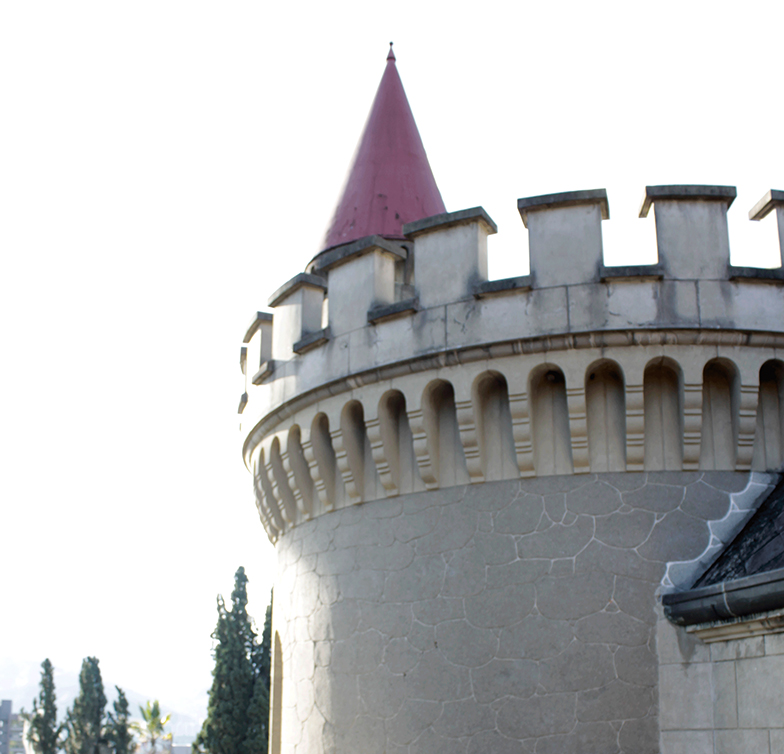
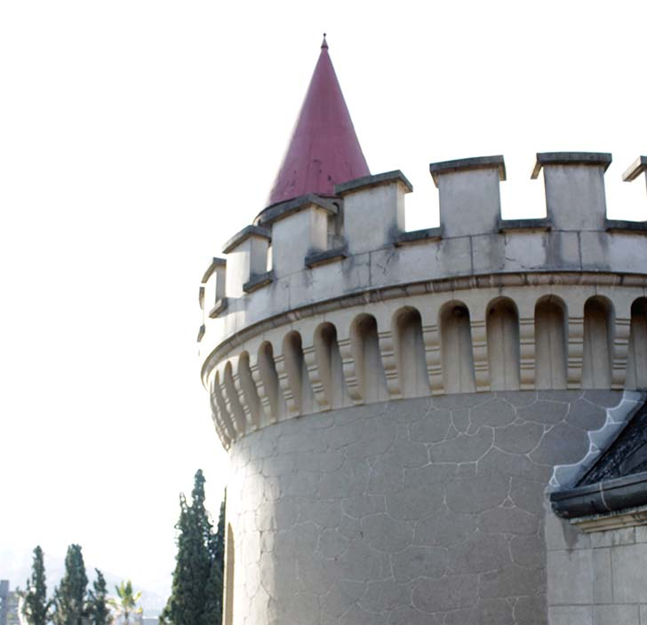

<html>
<head>
<meta charset="utf-8">
	<link rel="stylesheet" type="text/css" href="../estilos/estilosinternas.css">
	<link rel="shortcut icon" href="../favicon.jpg" />
	<link rel="stylesheet" type="text/css" href="../fonts/style.css">
	<title>Tarantela</title>
</head>
<body>
	<div id="caja_superior">

<a href= "https://www.facebook.com" id="facebok"><span class="icon-facebook"></span></a>
<a href="https://www.twitter.com" id="twiter"><span class="icon-twitter-with-circle"></span></a>
<a href="https://www.plus.google.com" id="google"><span class="icon-google-with-circle"></span></a>
<a href="https://www.youtube.com" id="youtube"><span class="icon-youtube"></span></a>
</div>

</body>
</html>

<header>


</header>

<nav>

	<ul>
	<li><a href="../index.html" target="_new" id="home">Home <span class="icon-home"></span></a></li>
	<li><a href="../index.html" target="_new" id="home2"> <span class="icon-home"></span></a></li>

	<li><a href="../paginas/history.html" target="_new" id="historia">Historia<span class="icon-hour-glass"></span></a></li>
	<li><a href="../paginas/history.html" target="_new" id="historia2"><span class="icon-hour-glass"></span></a></li>

	<li><a href="../paginas/jardin.html" target="_new" id="jardines">Jardines<span class="icon-leaf"></span></a></li>
	<li><a href="../paginas/jardin.html" target="_new" id="jardines2"><span class="icon-leaf"></span></a></li>

	<li><a href="../paginas/tarantel.html" target="_new" id="tarantela">Tarantela<span class="icon-shop"></span></a></li>
	<li><a href="../paginas/tarantel.html" target="_new" id="tarantela2"><span class="icon-shop"></span></a></li>

	<li><a href="../paginas/actividad.html" target="_new" id="actividades">Actividades<span class="icon-hand"></span></a></li>
	<li><a href="../paginas/actividad.html" target="_new" id="actividades2"><span class="icon-hand"></span></a></li>

	<li><a href="../paginas/edito.html" target="_new" id="editorial">Editorial<span class="icon-pencil"></span></a></li>
	<li><a href="../paginas/edito.html" target="_new" id="editorial2"><span class="icon-pencil"></span></a></li>
	</ul>

	<input type="search" name="busqueda" id="busca">

	</nav>

	 </img>


	<h1 id="titulo1"> TARANTELA </h1>
	<p id="titulo2"> Los tesoros de Isolda</p>

	<section id="bannerudem"></section>
	<p id="parrafocel">
	MUSEO EL CASTILLO <br> <br>
	Más que un museo, un lugar histórico, la memoria colectiva hecha castillo, un legado de aquellos que hicieron ciudad con sus ideas, un gigante de la arquitectura, un referente de unión entre las familias antioqueñas y las que sin serlo parecían haber nacido bajo las mismas montañas, una conjución entre lo moderno y lo antiguo, entre lo nuevo y lo viejo, entre un hogar convertido museo y un museo que acoge como propios a quienes lo visitan.</p>


	<p id="parrafoprincipal"> Actualmente conocida como la deliciosa cafetería del Museo El Castillo que tiene por nombre La Tarantela, este pequeño espacio que detrás de las estanterías, los snacks y demás elementos modernos, tiene más historia que el resto del museo puesto que quien lo ocupaba hace muchos años no era más que Isolda Echavarría, la amada hija del matrimonio Echavarría Zur Nieden; consentida de su padre y una seguidora de los pasos de su madre que aunque extranjera, acogió a la ciudad como si fuera suya.</p>
	
	

	<div id="borde"></div>

	

	<div id="borde2"></div>

	<p id="parrafo_secundario"> Aún se conservan intactos los objetos que fueron testigos de su crecimiento, juguetes, muchas muñecas, ropa, e incluso el uniforme que utilizaba para estudiar aun permanece intacto en su clóset como a la espera de que Isolda regrese para colocárselo a la mañana siguiente.<br> </br>Pinturas realizadas por ella misma, cenefas, dibujos, diarios y sillas con vista a una espléndida terraza, no son más que un recordatorio de aquella chiquilla apasionada por el arte, el baile y la danza, una joven afortunada por el estilo de vida que tuvo y por el legado que sus padres dejaron a la ciudad, aquellos que incluso después de haberla perdido tras haber viajado para realizar sus estudios de Ciencias Políticas en Estados Unidos y haber contraído una garve enfermedad que para el momento era difícil de curar, trataron de mantener vivo su recuerdo en el lugar que inició como un hogar y luego se convirtió en uno de los museos más reconocidos a nivel nacional.<br> </br>No solo este cuarto evoca el recuerdo de quien en una realidad diferente hubiese sido la heredera de tan magníficas creaciones; el piano ubicado en la sala principal de la casa fue el regalo que de 15 años le obsequió su padre, y el vitral de un pasaje de la obra de Wagner: El Tristán e Isolda, ubicado en el mismo lugar, fue la obra en la que se inspiraron sus padres para llamarla así, Isolda.</p>


	<div id="cajaroja1">
	<section id="banneraizon"></section>


<nav id="navinf">
	<ul>
	<li><a href="../index.html" target="_new" id="home">Home <span class="icon-home"></span></a></li>
	<li><a href="../paginas/history.html" target="_new" id="historia">Historia<span class="icon-hour-glass"></span></a></li>
	<li><a href="../paginas/jardin.html" target="_new" id="jardines">Jardines<span class="icon-leaf"></span></a></li>	
	<li><a href="../paginas/tarantel.html" target="_new" id="tarantela">Tarantela<span class="icon-shop"></span></a></li>
	<li><a href="../paginas/actividad.html" target="_new" id="actividades">Actividades<span class="icon-hand"></span></a></li>
	<li><a href="../paginas/edito.html" target="_new" id="editorial">Editorial<span class="icon-pencil"></span></a></li>
	</ul>
</div>

<section id="banneraizon2"></section>

<input type="search" name="busqueda" id="busca2">
<a href= "https://www.facebook.com" id="facebok2"><span class="icon-facebook"></span></a>
	<a href="https://www.twitter.com" id="twiter2"><span class="icon-twitter-with-circle"></span></a>
	<a href="https://www.plus.google.com" id="google2"><span class="icon-google-with-circle"></span></a>
	<a href="https://www.youtube.com" id="youtube2"><span class="icon-youtube"></span></a>


<div id="cajacafe"><footer> COPYRIGHT 2017 AIZOON SA. & CIA. </br>
TÉRMINOS Y CONDICIONES POLÍTICA DE PRIVACIDAD Y USO DE INFORMACIÓN PERSONAL SUPERINTENDENCIA DE INDUSTRIA Y COMERCIO</br>
NIT 890901353-2 DIRECCIÓN CARRERA 43 A N° 68 A SUR 30, SABANETA - ANTIOQUIA, COLOMBIA</br>
CONMUTADOR (57) (4) 5062470 BOGOTÁ (57) (1) 4156767 FAX (57) (1) 4157507 LÍNEA DE ATENCIÓN AL CLIENTE (57) (4) 2186547</footer></div>
<div id="cajaroja2"></div>
